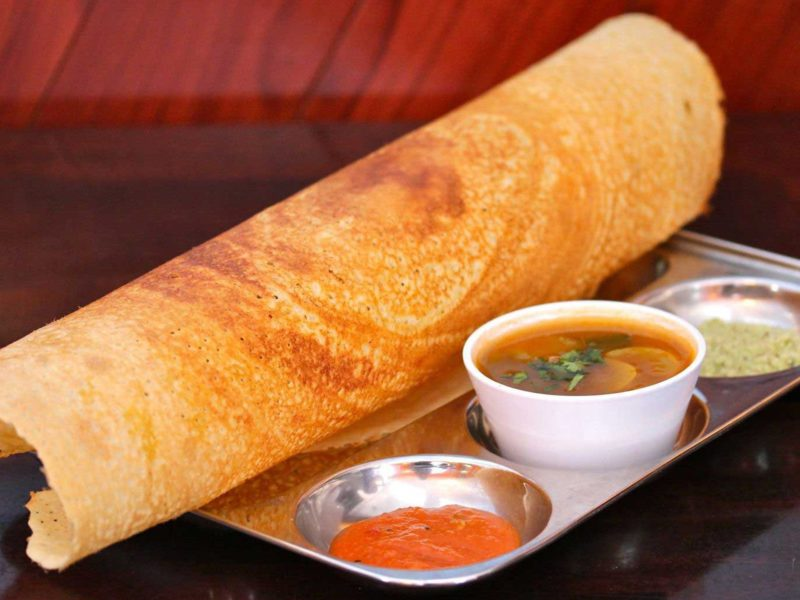
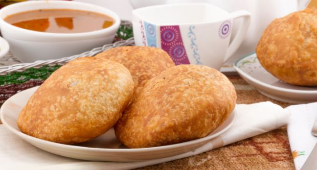
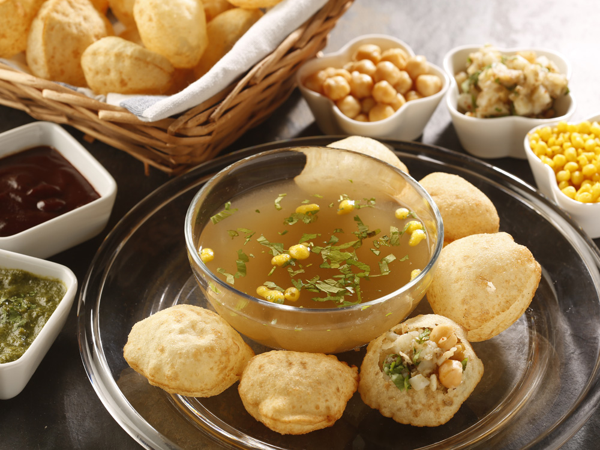
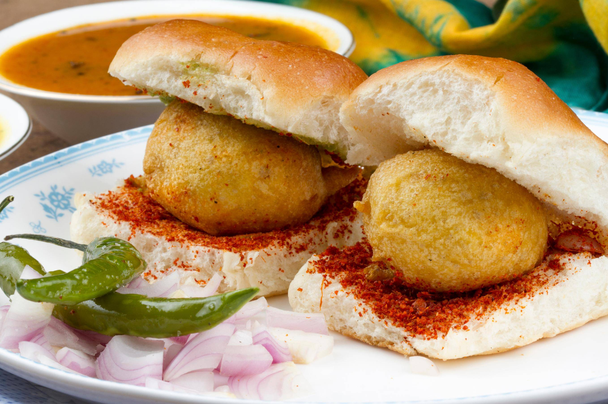

The capital of India is one of the best place to have street foods, Delhi offers variety of road side food and stalls.
Chole bhature is a Punjabi dish but very popular in major urban cities of India. Delhi is well famous for best chole bhature, commonly eaten for break fast or snacks other famous road side food from Delhi are rajma chawal, prathe and most famous mouth watering snacks item chaat.
Aloo Tikki: Lucknow
Aloo Tikki
The most popular snack dishes aloo tikki typically served at road-side tracks from stalls in Lucknow and all over India.
Aloo tikki is one of the most mouth-watering delicacies within the street food of Uttar Pradesh. The North Indian snack is made of boiled potatoes and various spices served hot along with sauce. The dish vary from city to city with different name and forms like ragda pattice in Mumbai, Aloo chat etc, The royal cuisines of Lucknow, galauti kebab is a kind of road side food which is also one of the most famous food in streets of Lucknow. Other popular street foods in Uttar Pradesh included Bhel, pani puri, sev puri, dahi puri,jhalmuri and Puri-Subzie.
Dosa: South India

Masala Dosa
Dosa is a type of pancake from the Indian subcontinent, made from a fermented batter. It is somewhat similar to a crepe in appearance.
Its main ingredients are rice and black gram. Dosa is a typical part of the Southern Indian diet and popular all over the Indian subcontinent. Traditionally, Dosa is served hot along with sambar, stuffing of potatoes and chutney. It can be consumed with idli podi as well.
Kachori: Bikaner

Dal Kachori
The royal state of India, Rajasthan is well famous for its awesome cuisines and delectable street foods.
Its famous Bikaneri kachori and popular mirchi bada are the most favorite amongst the locals, and found in almost every street shop or stall. The desert state also known for its most popular dal-baati-churma, pakores and mawa, famous desert from alwar.
Pani-Puri

Pani-Puri
Panipuri is a common street snack in several regions of the Indian subcontinent.
It consists of a round, hollow puri, fried crisp and filled with a mixture of flavored water (commonly known as imli pani), tamarind chutney, chili, chaat masala, potato, onion or chickpeas
Vada Pao: Mumbai

Vada Pao
The Indian version of burger and most popular road side food straight from the heart of Maharashtra.
Vada Pao is the most loved and ultimate staple food item, consists of a fried potato dumplings called vada served in a bun, pav with condiments such as red or green chutneys and fried green chillies. The famous vegetarian fast food dish is native to Maharashtra few other are misal pav,pav bhaji, pav-sample, dabeli, batata wada and kande pohe.
This is the default dialog which is useful for displaying information. The dialog window can be moved, resized and closed with the 'x' icon.